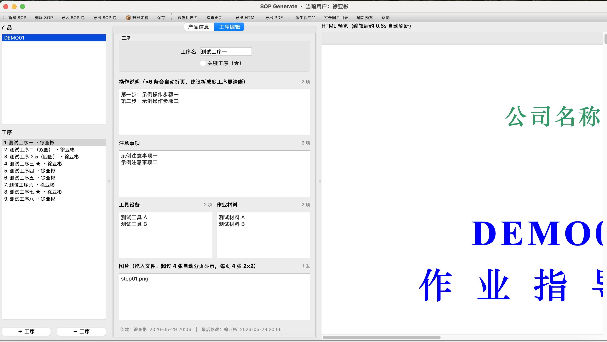

SOP Generate 使用说明
公司内部标准化作业指导书（SOP）生成工具。把工艺步骤填进表单，自动产出 A3 排版的 HTML 和 PDF 文档。
📖 本文档章节
1. 软件简介
1.1 它能做什么
把工艺员脑子里的"装配步骤"快速变成规范、统一、可打印的作业指导书。
- 📄 统一排版：所有产品的 SOP 共用同一套 A3 模板，封面、目录、工艺流程图、工序详情页全部自动生成
- 🖼️ 多图自适应：每道工序可放任意张图，软件根据数量自动选 1 张全占 / 2 张上下 / 3-4 张 2×2 / 超过 4 张自动分页
- ⚙️ 所见即所得：左边填字段，右边实时预览，改完直接看效果
- 📦 独立工程包：每个 SOP 是一个独立的工程文件夹，可一键打包成
.sopkg发给同事接力编辑 - 👥 修改追溯：每道工序自动记录最后修改人和时间，责任清晰
- 📋 定稿归档：一键生成带日期的 HTML + PDF + .sopkg 包到指定文件夹
- 💾 导出 HTML + PDF：内部归档用 HTML，打印发车间用 PDF
- 🔄 自动更新：启动时检查新版本，一键升级，老数据自动保留
1.2 适合谁用
| 角色 | 使用方式 |
|---|---|
| 工艺员 / 工艺工程师 | 主要用户。用图形界面新建 SOP、编辑工序、导出 PDF 给车间 |
| 结构 / 测试工程师 | 接力编辑，编辑后导出 SOP 包发给下游工程师 |
| 班长 / 生产主管 | 查看已有 SOP，新版本时一键升级软件 |
| 软件工程师 | 可用命令行批量生成；可用 Claude AI 自然语言起草 YAML |
2. 安装指南
2.1 Windows 安装
📦 准备工作（只需一次）
- 装一个支持 7z 分卷的解压软件——任意都行： 7-Zip / Bandizip / WinRAR 等都可以。如果电脑里已经有解压软件可以跳过这步
- 确认电脑装了 Microsoft Edge（Win10/11 自带，无需额外操作）或 Google Chrome。没装浏览器的话 PDF 导出会用不了
📥 下载与解压
- 打开上面的下载页面，找到最新版本（页面顶部的那个）
- 在 Windows 下载 章节，把页面列出的所有分卷全部下载到同一文件夹：
sop_generate-win-vX.Y.Z.7z.001 sop_generate-win-vX.Y.Z.7z.002 sop_generate-win-vX.Y.Z.7z.003 ...所有分卷必须全部下载且放在同一文件夹，缺一个解压失败 - 在所有分卷所在文件夹里，右键
.7z.001（注意是 001 那一个）→ 选你装的解压软件 → 解压到当前位置 - 得到
sop_generate-win/文件夹 - 建议移到固定位置，例如
D:\sop_generate\
🚀 首次启动
- 双击
sop_generate.exe - Windows Defender 弹"未识别的应用" → 点 "更多信息" → "仍要运行"
- 主界面出现即成功
sop_generate.exe → "发送到 → 桌面快捷方式"，以后直接桌面双击就能启动2.2 macOS 安装
bash packaging/build_macos.sh 本地生成。- 在 macOS 开发机上进入项目目录
- 运行
bash packaging/build_macos.sh - 生成目录为
dist/sop_generate-mac-vX.Y.Z/，也可自行压缩后内部传递 - PDF 导出仍需本机安装 Microsoft Edge 或 Google Chrome
🚀 首次启动
- 双击
sop_generate.app - 系统弹"无法验证开发者"或"已损坏" → 不要点"移到废纸篓"
- 打开 系统设置 → 隐私与安全性 → 滚到底部找到 "sop_generate 已被阻止" → 点 "仍要打开"
- 再次双击
sop_generate.app即可
3. 首次启动 · 设置用户名
首次启动会强制要求填写用户名。这个名字会自动记录到你修改过的每道工序里，用于责任追溯。
- 启动软件后，弹窗 "请输入你的名字（用于记录 SOP 修改人）"
- 输入你的真实姓名（中文/英文都可以），点确定
- 用户名保存在
config/current_user.json，下次启动不会再问 - 顶部标题栏会显示
SOP Generate · 当前用户：你的名字
3.1 修改用户名
如果换人用同一台电脑或者填错了，工具栏点 设置用户名 改名。改名后新的修改会写新用户名；老工序里的修改记录不变。
4. 5 分钟上手（做第一份 SOP）
- 启动软件 → 填用户名 → 主界面出现，左侧已有示例
DEMO01 - 工具栏 新建 SOP → 输入型号
TEST01→ 确定 - 左侧出现
TEST01，切到中间 "产品信息" 标签页，填封面信息（产品名、公司名、版本、日期） - 左下角 "＋ 工序" 添加一道工序
- 切到 "工序编辑" 标签页，填：
- 工序名：
测试工序 - 操作说明：每行一条
- 工具设备 / 作业材料：每行一条
- 工序名：
- 把工序图直接拖到右下角"图片"区域，软件自动复制到工程包里
- 右侧自动显示实时预览
- 工具栏 保存
- 定稿后工具栏 📦 归档定稿 → 选输出目录 → 自动生成带日期的 HTML + PDF + .sopkg
5. 主界面介绍

SOP Generate 主界面（v1.2.4）
整体布局分三栏：左侧 产品 + 多级工序列表（每个工序显示自动编号、标准工时、最后修改人，底部可追加同级/子级、插入、升降级、移动、删除），中间 编辑区（产品信息 / 工序编辑两个标签页，底部显示当前工序的创建/修改追溯信息），右侧 HTML 实时预览。顶部是工具栏，标题栏显示当前用户名。
5.1 工具栏按钮
| 按钮 | 功能 | 使用时机 |
|---|---|---|
| 新建 SOP | 创建一个新的 SOP 工程文件夹 | 开新项目 |
| 删除 SOP | 删除当前 SOP（需双重确认） | 清理废弃 SOP |
| 导入 SOP 包 | 从 .sopkg 文件导入一个 SOP 工程 | 同事发来 SOP 包接力 |
| 导出 SOP 包 | 把当前 SOP 打包为 .sopkg 文件 | 发给同事接力或备份 |
| 📦 归档定稿 | 定稿后一键生成带日期的 HTML+PDF+.sopkg 包 | SOP 最终定稿 |
| 保存 | 把当前编辑写入 YAML，更新 _meta 修改追溯 | 编辑后随时 |
| 设置用户名 | 修改当前用户名 | 换人用 / 改名 |
| 检查更新 | 主动查询是否有新版本 | 主动查更新 |
| 导出 HTML | 渲染为 HTML 文件 | 归档、邮件分发 |
| 导出 PDF | 渲染为 PDF 文件 | 给车间打印纸质 |
| 派生新产品 | 复制当前 SOP 作为新 SOP 的起点 | 类似产品快速建模 |
| 打开图片目录 | 用资源管理器打开当前 SOP 的 images 目录 | 批量管理图片 |
| 刷新预览 | 强制重新渲染右侧预览，并回到当前选中的工序页 | 预览未自动刷新时 |
| 帮助 | 显示版本号 + 打开本使用手册 | 查版本、查使用方法 |
5.2 三大区域
| 区域 | 作用 |
|---|---|
| 左侧 | 上半：所有 SOP 列表；下半：当前 SOP 的多级工序，支持同级/子级、升降级、整体移动父子工序块 |
| 中间 | 编辑区。两个标签：产品信息（封面）/ 工序编辑（当前工序所有字段 + 底部修改追溯信息） |
| 右侧 | HTML 实时预览，编辑字段后约 0.6 秒自动刷新；左侧选中哪个工序，预览会定位到对应工序页 |
6. SOP 管理
6.1 新建 SOP
- 工具栏 新建 SOP
- 弹窗输入产品型号：
- 可以使用中文、英文、数字等任意语言文字
- 不能包含文件系统不允许字符：
\ / : * ? " < > |，也不要以点号或空格结尾 - 例：
XESA01、RX-2000、演示产品_v2
- 确定后软件自动创建工程目录：
sop_packages/<型号>/ ├── product.yaml （YAML，含 _meta 追溯字段） ├── images/ （图片，初始为空） └── output/ （生成的 HTML/PDF，初始为空） - 左侧自动选中新建的 SOP，切到 "产品信息" 标签页填字段
6.2 产品信息字段
| 字段 | 说明 | 示例 |
|---|---|---|
| 产品型号 | 同工程目录名，新建后不可改 | XESA01 |
| 产品名称 | 显示在工序页表头 | 射频终端 |
| 公司名 | 显示在封面顶部（绿色字） | 你公司全称 |
| 文件编号 | 显示在封面和每页表头 | DOC-XX-001 |
| 版本 | 形如 A/0、B/1 | A/0 |
| 发布日期 | YYYY-M-D 格式 | 2026-1-15 |
| 实施日期 | YYYY-M-D 格式 | 2026-2-1 |
6.3 派生 SOP（基于已有产品快速建模）
- 左侧选中作为模板的 SOP（例：
XESA01） - 工具栏 派生新产品
- 输入新型号（例：
XESA02） - 软件自动：
- 复制所有工序结构（名称、操作说明、注意事项、工具材料）
- 清空图片字段（新产品零件不同，需重新选图）
- 清空 _meta（追溯记录从派生时刻起重新累积）
- 创建空的
sop_packages/XESA02/images/目录
- 在新 SOP 上修改差异部分 + 替换图片
6.4 删除 SOP
支持 GUI 删除，双重确认防误删：
- 左侧选中要删除的 SOP
- 工具栏 删除 SOP
- 第一道确认：弹窗显示工序数、图片数 + 警告"不可撤销" → 点"删除"
- 第二道确认：要求手动输入产品型号才允许删除 → 输错或取消都不删
- 确认后整个工程目录被删除
7. 工序编辑
7.1 追加同级 / 子级工序
- 左侧选中 SOP
- 选中一个已有工序后，点 ＋ 同级 可在该工序块后添加同级工序
- 点 ＋ 子级 可添加下一层工序，最多三级，例如
3-1-1 - 新工序名字默认"新工序"，标记当前用户为创建者
- 切到 "工序编辑" 标签页填字段
7.2 插入工序
- 左侧先选中一个已有工序
- 点 插入
- 弹窗选择 插入到前面 或 插入到后面（默认后面）
- 新工序按同级插入，后续编号自动重排，右侧预览同步刷新
- 填好字段后点 保存
7.3 调整层级
- 选中工序后点 ← 升级 或 → 降级
- 软件最多支持三级工序，一级不能继续升级，三级不能继续降级
- 父级工序升降级时，其子级会跟随调整，避免编号断裂
7.4 删除工序
- 左侧选中要删除的工序
- 点 － 工序
- 如果删除的是父级工序，其子级也会一起删除
- 立即生效，不二次确认。误删后必须重新填一遍，建议删除前用 保存 备份
7.5 调整工序顺序（拖拽 / 上下移动）
- 左侧工序列表里按住鼠标左键拖动
- 也可以使用 ↑ 上移 / ↓ 下移
- 父级工序移动时，子级整体跟随；松开后工序编号、流程图、工序详情页全部自动重排
- 拖拽按真实工序数据移动，不按工序名称匹配；即使两个工序重名，也会移动当前选中的那一个
- 记得点 保存
7.6 标准工时
工序编辑区的 标准工时 填分钟数字。导出时自动显示：45 → 45min，60 → 1h，75 → 1h15min；不填显示 —。
7.7 标记关键工序 ★
涉及静电敏感器件、精密装配等的工序应标记。
- 切到 "工序编辑" 标签页
- 勾选 ☐ 关键工序（★）
- 保存后在以下位置出现 ★：封面、目录、流程图、工序详情页表头
8. 修改追溯
v1.1.0 起每道工序都自动记录创建人/修改人。这是责任追溯的核心机制。
8.1 看修改记录
- 左侧工序列表：每条工序右侧显示 · 最后修改人
例：1. 测试工序一 · 徐亚彬 - 工序编辑器底部：显示完整的创建和最后修改信息
例：创建：徐亚彬 2026-05-29 20:06 │ 最后修改：徐亚彬 2026-05-29 20:30
8.2 追溯机制
| 动作 | 追溯字段更新 |
|---|---|
| 新建工序 | created_by/at 和 last_modified_by/at 都填当前用户 |
| 编辑工序后保存 | 仅更新 last_modified_by/at（保留 created_*） |
| 保存时没改 | 什么都不更新（智能对比，避免误标） |
| 拖拽排序 | 不算修改，工序内容不变就不更新 |
| 派生 SOP | 新 SOP 的 _meta 重置，由派生人作为"创建者" |
9. 字段填写规则
每个工序有层级、工时和 6 类内容字段。v1.2.0 起内容字段允许为空，适合先搭 SOP 框架；超出单页容量会自动分页显示。
9.1 操作说明
| 项目 | 规则 |
|---|---|
| 数量 | 无上限，单页 6 条，超出自动分多页 |
| 可否为空 | 可以。为空时按草稿占位导出，归档定稿会二次确认 |
| 分页示例 | 14 条操作说明 → 自动分 3 页（6+6+2），页头标 (1/3) (2/3) (3/3) |
| 字符长度 | 不强制，建议每条 ≤ 30 个汉字 |
| 推荐做法 | 超过 6 条优先把工序拆成两道，每道有自己的图片/工具/材料，比续页更清晰 |
9.2 注意事项
| 项目 | 规则 |
|---|---|
| 数量 | 无上限，单页 4 条，超出自动分多页 |
| 可否为空 | 可以 |
| 编号 | 自动加 ①、②、③、④...（续页继续序号） |
| 字符长度 | 不强制，建议每条 ≤ 28 个汉字 |
9.3 工具设备 / 作业材料
| 项目 | 规则 |
|---|---|
| 数量 | 无上限，单页 4 项，超出自动分多页 |
| 可否为空 | 可以 |
| 字符长度 | 不强制，建议 ≤ 10 个汉字 |
9.4 多级工序与父级摘要
工序最多三级。父级工序如果自己填写了操作说明、图片等内容，会生成完整详情页；如果父级只是分组、自己没有内容，会生成子工序摘要页；末级工序即使为空，也会生成可后续填写的占位详情页。
10. 图片管理
10.1 添加图片（拖拽）
- 准备图片（推荐 PNG，JPG 也可以）
- 从文件管理器拖到中间编辑区右下方"图片"区域
- 软件自动：
- 把图片复制到
sop_packages/<型号>/images/ - 把文件名填入工序的
images字段 - 右侧预览立即显示
- 把图片复制到
10.2 图片数量与布局
每道工序可以放任意张图，软件按数量自动选择布局：
全占右半区
上下排列
2×2 网格
自动分页
每页 2×2
自动分多页
10.3 手动调整图片布局
- 在工序编辑区先拖入或填写图片文件名
- 点击图片区域右上角 编辑布局
- 在弹窗画布中直接拖动图片本体调整位置，拖动右下角蓝色方块等比缩放
- 选中图片后可点 左转 90° / 右转 90° 调整手机照片方向
- 图片只能在工序详情页右侧固定图片画布内移动，不能超出画布，也不会改变整张 A3 表格布局
- 点确定后，软件把位置、大小和旋转角度保存为百分比布局，HTML 预览和 PDF 导出保持一致
10.4 图片大小建议
| 项目 | 建议 |
|---|---|
| 分辨率 | 不低于 1280×800，太低打印会糊 |
| 格式 | PNG（推荐）或 JPG |
| 单图体积 | 不要超过 5MB |
| 命名 | 用工序名+序号，例：装O型圈_01.png |
11. 预览与导出
11.1 实时预览
右侧是 HTML 实时预览。任何字段改动后约 0.6 秒自动刷新。如果觉得卡，工具栏点 刷新预览 强制刷新。刷新完成后，预览会自动回到左侧当前选中的工序页，不会每次跳回封面。
11.2 导出 HTML
- 工具栏 导出 HTML
- 软件自动渲染并保存到
sop_packages/<型号>/output/<型号>.html
11.3 导出 PDF
- 确认装了 Microsoft Edge 或 Chrome
- 工具栏 导出 PDF
- 软件自动调浏览器以无界面模式打印为 PDF
- 保存到
sop_packages/<型号>/output/<型号>.pdf
11.4 输出位置
sop_packages/
└── XESA01/ ← 一个 SOP 的所有内容都在这
├── product.yaml ← 工序数据
├── images/ ← 工序图
└── output/ ← 导出的 HTML/PDF
├── XESA01.html
└── XESA01.pdf12. SOP 包导入/导出（.sopkg）
每个 SOP 工程文件夹可以一键打包成 .sopkg 文件，方便发给同事接力编辑或者备份。
12.1 导出 SOP 包
- 左侧选中要导出的 SOP
- 工具栏 导出 SOP 包
- 文件对话框：选保存位置和文件名（默认
<型号>.sopkg） - 软件自动打包：
- product.yaml（含 _meta 追溯）
- images/ 整个目录
- output/ 已生成的 HTML/PDF（如果有）
- 得到一个
<型号>.sopkg文件，可以发给同事
.sopkg 本质是 ZIP 压缩包，用 7-Zip / Keka 也能直接打开看内容。12.2 导入 SOP 包
- 工具栏 导入 SOP 包
- 文件对话框：选
.sopkg文件 - 软件解压到
sop_packages/<型号>/- 同名已存在：自动备份成
<型号>.bak_<时间戳>/，导入新的 - 不存在：直接导入
- 同名已存在：自动备份成
- 左侧自动选中导入的 SOP，立即可编辑
12.3 接力编辑场景
结构 → 工艺 → 测试 接力做 SOP：
- 结构工程师建 SOP，填工序 1-3（结构装配） → 导出 SOP 包 → 发给工艺员
- 工艺员 导入 SOP 包 → 继续编辑工序 4-N → 导出 SOP 包 → 发给测试
- 测试工程师 导入 SOP 包 → 加测试工序 → 📦 归档定稿
每一道工序的 _meta 都会记录是谁加的、谁改的，责任清晰。
13. 归档定稿
SOP 最终定稿后，用 📦 归档定稿 一键生成带日期的归档物，保存到你指定的文件夹。
13.1 操作步骤
- 左侧选中要归档的 SOP
- 工具栏 📦 归档定稿
- 软件自动跑校验（必填字段、图片存在等）+ 保存当前编辑
- 文件对话框：选输出文件夹（建议公司归档盘的对应位置）
- 软件自动生成：HTML + PDF + .sopkg 包（文件名都带日期）
- 完成弹窗汇报产物清单
13.2 归档产物
假设今天是 2026-05-29，归档 DEMO01 到 D:\公司归档\SOP\：
D:\公司归档\SOP\
├── DEMO01_20260529/ ← 工程文件夹（带日期）
│ ├── product.yaml ← YAML 源数据（含 _meta）
│ ├── images/ ← 全部工序图
│ │ ├── step01.png ... step09.png
│ ├── DEMO01_20260529.html ← HTML 文档
│ └── DEMO01_20260529.pdf ← PDF 文档
└── DEMO01_20260529.sopkg ← 同名 .sopkg 包（含上面全部）13.3 注意点
- 同日多次归档：自动加序号
_2/、_3/...不覆盖之前的 - 校验未通过：必填字段缺失、图片找不到等会拒绝归档，先修好再归档
- 存在草稿内容：如果有空工序或空操作说明，软件会弹窗二次确认后再归档
- 用户名必须设置：未设用户名不能归档
- PDF 失败不阻塞：没装 Edge/Chrome 时 PDF 会跳过，但 HTML 仍生成
.sopkg 包可以直接邮寄、上传到归档系统、刻盘存档——单文件搞定。14. 团队协作建议
14.1 接力编辑（推荐）
用 .sopkg 包传递，详见 12.3 接力编辑场景。
14.2 共享网盘
把 sop_packages/ 整个目录指向公司共享盘（OneDrive / 钉钉网盘 / 私有 NAS），多人共用：
- 团队约定一个共享盘位置，例：
\\公司盘\sop_共享\ - 每个人把自己软件目录下的
sop_packages/改为指向共享盘的符号链接 - 约定"动谁的 SOP 先在群里通知一声"
14.3 工序归属
由于 _meta.last_modified_by 自动追溯，工序列表里能直观看到"工序 1-3 是结构工程师改的、4-8 是工艺员改的"，不需要额外加标签。
15. 自动更新
15.1 工作原理
- 软件每次启动后约 1-2 秒，后台检查发版仓库是否有新版本
- 有新版 → 弹窗 "立即更新 / 暂不更新 / 跳过此版本"
- 选立即更新 → updater 子程序接管，主程序退出
- updater 自动：下载分卷 → 大小校验 → 解压 → 替换文件（保留 sop_packages / config 等用户数据） → 启动新版本
15.2 升级时自动保留的数据
| 目录 | 内容 |
|---|---|
sop_packages/ | 所有 SOP 工程包（你的全部数据） |
config/ | 用户名等应用配置 |
output/ | 批量导出的 HTML/PDF |
_legacy_v1_backup/ | v1.0.x 数据备份 |
15.3 手动检查更新
工具栏 检查更新，或者 帮助 弹窗里点"检查更新"。
15.4 帮助弹窗
工具栏 帮助 显示：
- 当前版本号
- 当前用户名
- 打开使用手册：用浏览器打开本说明
- 检查更新：手动查询新版本
16. 数据迁移
16.1 v1.0.x → v1.1.0 自动迁移
v1.0.x 的目录结构是 products/ + assets/images/，v1.1.0 改成统一的 sop_packages/<型号>/。
首次启动 v1.1.0 时，软件自动检测到老数据并弹窗：
- 弹窗 "检测到 v1.0.x 的产品数据。是否一键迁移到新结构 sop_packages/？"
- 点 "立即迁移"，软件自动：
- 把
products/<型号>.yaml复制到sop_packages/<型号>/product.yaml - 把
assets/images/<型号>/复制到sop_packages/<型号>/images/ - 老目录
products/和assets/搬到_legacy_v1_backup/<时间戳>/
- 把
- 弹窗汇报"已迁移 N 个产品"
- 左侧产品列表显示迁移后的所有 SOP
_legacy_v1_backup/ 保留 1 个月。如果旧 products/ 里的型号已经全部存在于 sop_packages/，软件会跳过重复迁移，但仍会把旧目录移入备份，避免下次启动反复弹"检测到旧版本数据"。一个月后软件会自动清理，可以提前确认无误后手动删除整个目录释放空间。16.2 全新装新版本
如果是从一台新电脑或者完全干净环境装新版本，可以用工具栏 导入旧数据 选老版本根目录（含 products/），软件批量迁移过来。
17. 工程结构
v1.1.0 起每个 SOP 是一个独立的工程文件夹，所有相关数据都在里面：
sop_generate-win/ ← 软件根目录
├── sop_generate.exe ← 主程序
├── updater.exe ← 升级程序
├── _internal/ ← 运行时库（不可删）
├── 使用说明.html ← 本说明
├── sop_packages/ ← 所有 SOP 工程包（核心数据）
│ ├── DEMO01/ ← 一个 SOP 的所有数据
│ │ ├── product.yaml ← 工序内容 + _meta 追溯
│ │ ├── images/ ← 工序图
│ │ │ ├── step01.png
│ │ │ └── ...
│ │ └── output/ ← 生成的 HTML/PDF
│ │ ├── DEMO01.html
│ │ └── DEMO01.pdf
│ └── XESA01/ ← 另一个 SOP
│ ├── product.yaml
│ ├── images/
│ └── output/
├── config/
│ └── current_user.json ← 当前用户名
├── _legacy_v1_backup/ ← v1.0.x 数据备份（自动生成，保留 1 月）
└── output/ ← CLI 批量导出的产物17.1 文件组织优点
- 整个文件夹就是一个 SOP，复制粘贴就能传递（zip 不需要打开看）
- 图片和工序绑定，不会"YAML 改了图却忘了一起复制"
- 输出物归类：生成的 HTML/PDF 跟着源文件，不混在一起
- 升级安全：自动更新只会替换软件本体，
sop_packages/、config/等用户数据目录永远保留
18. 常见问题（FAQ）
Q1：YAML 是什么？我能编辑吗？
YAML 是软件用来存储产品数据的文本文件，纯文本，用记事本/VS Code 能打开。普通用户不要直接编辑，请用软件 GUI。
Q2：能在 Word 里继续编辑导出的 PDF 吗？
不可以。本工具的输出是固定排版的 PDF，不是 Word 文档。
Q3：能改模板样式吗？比如换公司 Logo？
软件 GUI 暂不支持改模板。如需修改请联系 徐亚彬。
Q4：同一台电脑两个人轮流用，怎么区分？
换用户时点 设置用户名 改名，之后新的修改会记录新用户名。不会改老工序的记录。如果完全独立，建议每人在自己 Windows 账户下装一份。
Q5：升级以后旧 PDF 还能打开吗？
能。已经导出的 PDF 是独立文件，和软件无关。
Q6：能批量导出多个 SOP 的 PDF 吗？
GUI 一次一个。批量请联系 徐亚彬 跑命令行：
python gen.py DEMO01 XESA01 XESA02 --pdf
# 或
python gen.py sop_packages/*/product.yaml --pdfQ7：能离线使用吗？
软件核心功能完全离线。只有这两件事需要网络：启动时检查更新 / 下载新版本。编辑、生成 PDF 全部不需要网络。
Q8：导出的 PDF 是 A3 大小，公司只有 A4 打印机怎么办？
打印对话框里选 "缩放 → 适合页面"，可把 A3 缩到 A4 打印（字会变小）。建议优先用 A3 打印机。
Q9：归档后 sop_packages 里的 SOP 还要留着吗？
建议留着。归档物在另一个目录里（你选的归档输出文件夹），是定稿快照。sop_packages/ 里的是工作副本，可以继续迭代下个版本。
Q10：忘了设用户名直接用了软件，记录会怎样？
没设用户名什么都做不了，软件会强制弹窗让你设置。如果误填了名字（写错字），后续修改 SOP 时会记新名字，但老的修改记录不会改。
19. 故障排查
19.1 软件启动报错
| 现象 | 原因 | 解决 |
|---|---|---|
| "系统找不到指定文件" / 双击 .exe 闪退 | 解压时少了 _internal/ 文件夹 |
重新下载所有分卷，确认 _internal/ 在 .exe 同级 |
| "sop_generate 已损坏，无法打开"（Mac） | 苹果安全机制 | 系统设置 → 隐私与安全性 → 仍要打开 |
| Defender 阻止（Win） | 未签名应用 | "更多信息 → 仍要运行" |
19.2 导出 PDF 失败
| 错误信息 | 原因 | 解决 |
|---|---|---|
| "未找到 Chrome / Edge" | 本机没装支持的浏览器 | 装 Microsoft Edge 或 Google Chrome |
| PDF 是空白页 | 浏览器版本太旧 | 更新 Edge / Chrome 到最新版 |
| PDF 里图片不显示 | 图片路径错 | 检查 sop_packages/<型号>/images/ 下文件存在，且工序的 images 字段名拼写正确 |
19.3 自动更新失败
| 现象 | 解决 |
|---|---|
| "无法连接到 Gitee" | 检查网络；公司内网代理需 IT 配置允许 gitee.com |
| 下载中途断网 | 关掉 updater 窗口，重启软件，重新点更新（已下载的分卷会自动续传） |
| 升级后软件打不开 | 手动重装：下载新版本到隔壁目录，用 导入 SOP 包 把老 SOP 导入新版本 |
19.4 求助联系
使用问题（不会用、想批量、想改模板）：
- 📧 联系：徐亚彬
报 Bug：
- 截图、说明操作步骤、给出复现方法 → 发给 徐亚彬
- 从
sop_packages/<型号>/product.yaml复制相关 SOP 内容（如果涉及数据） - 遇到问题时点 帮助 看一下版本号，附在反馈里